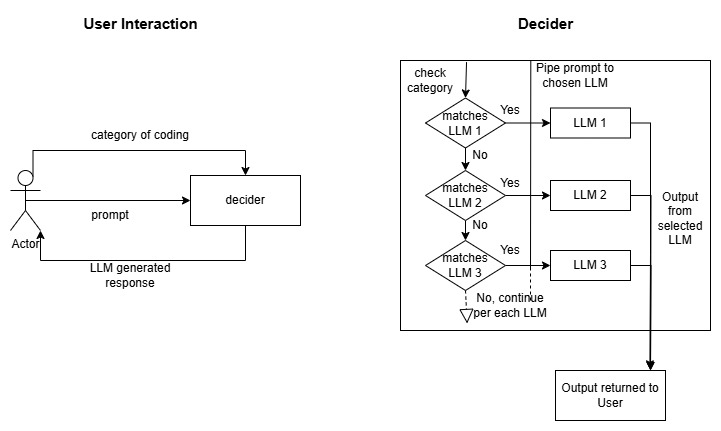

Riverside Research is a nonprofit organization that has been completing cutting edge research since it was established in 1967. Their research covers many fields which include radar, intelligence & surveillance, THz Imaging, and of course, Artificial Intelligence & Machine Learning.
There are many different LLMs available, and all have varying degrees of competency in different fields. In order to maximize accuracy and efficiency, as well as minimize waste and cost, Riverside Research wants a way to choose the best LLM based on their various coding proficiencies. This will allow for programmers to have one convenient tool that will effectively act as the best LLM for each question, to make development in other projects faster.
To research and develop an effective routing tool for utilizing the strengths of multiple LLM models related to various software development processes and programming categories.
Goals for this sprint surrounded mainly around completing reasearch in preperation for development. The major objectives were performing initial research on possible LLMs to use, as well as establishing and familiarizing ourselves with the technologies that would be used.
In this sprint we successfully determined and familiarized outsevles with the relevant technologies for this project's tech stack. Some preliminary prototype applications were developed as we learned Vue and FastAPI. Cursory research was conducted into viable LLMs, including Llama, Mistral, Granite, and CodeGen.
We also began some preliminary design work. Pictured below is a basic diagram detailing the user input and system output.
